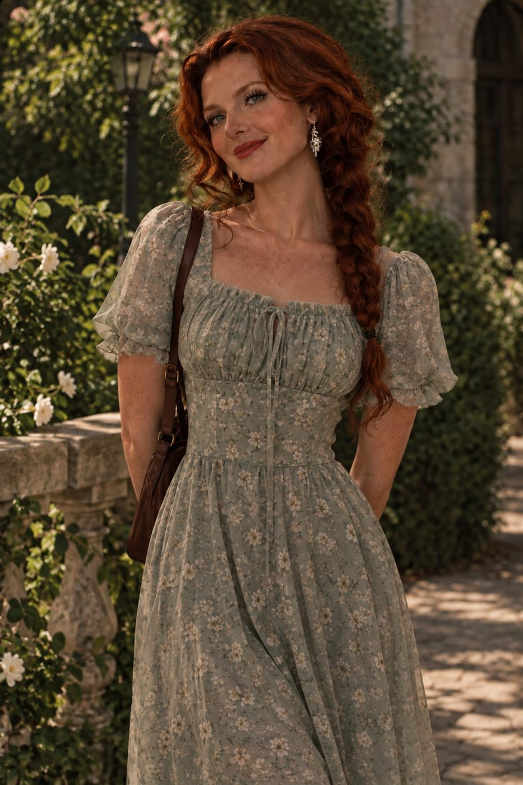
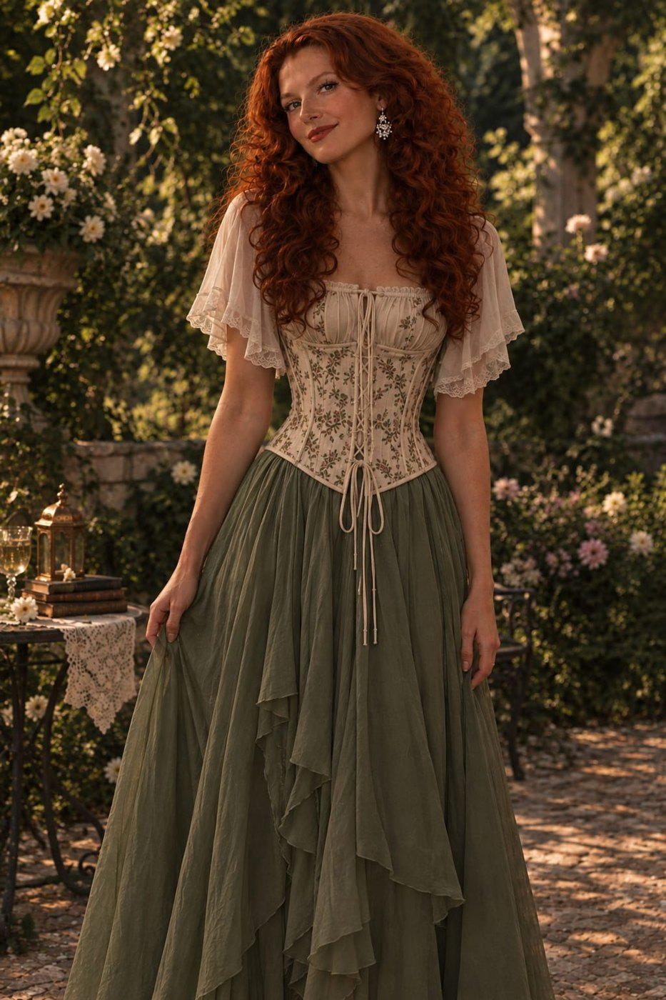
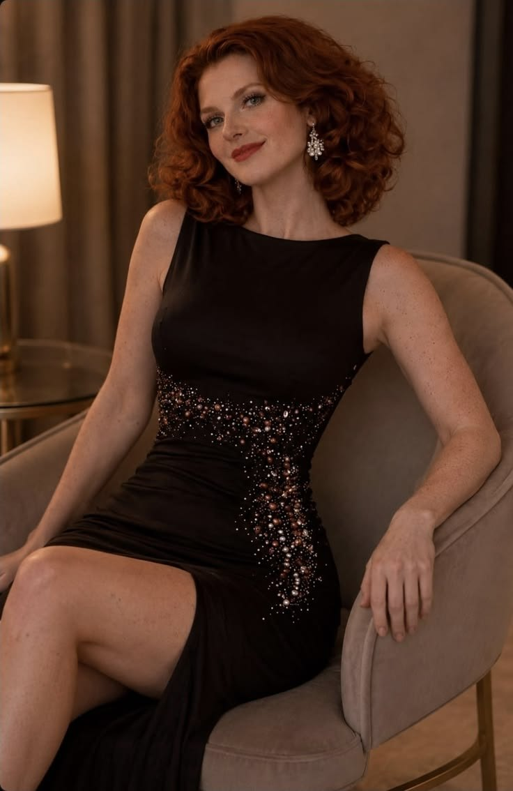
Natasha Clifford Weber Miller
Rainha da Inglaterra · Conselho de Contenção da Terra-616Identificação
Idade: 25 anos
Nacionalidade: Inglesa / Escocesa
Estado civil: Casada com Joel Clifford Weber Miller
Mãe: Elizabeth Clifford Weber
Pai: William Lucchesi Weber
Irmã: Chloe Clifford Weber
Filhos: Lara (7), Nathalia (5), Rebeca (3) e Theo (3)
Habilidades
Feixe e Esfera Psíquicos
Controle e invasão mental, ilusões
Escudo e Armadura Psíquica
Telecinese ampliada
Orbe Psíquico Explosivo Supremo (ataque máximo)
Natasha nasceu como filha mais velha da Rainha Elizabeth Clifford Weber, criada desde o nascimento para assumir o trono britânico e comandar a Weber, o maior conglomerado econômico e tecnológico da Europa. Apesar da criação rígida da realeza, sua infância foi marcada por momentos simples ao lado de Joel Miller, seu melhor amigo — o refúgio dos dois era uma casinha na árvore, escondida nos jardins do palácio, onde podiam esquecer o peso da coroa. Ao atingir a idade adulta, foi enviada para Paladis para expandir a influência da Weber no continente, e foi nesse período que entrou em contato com a Pedra do Poder, despertando habilidades psíquicas extraordinárias. Após cumprir sua missão, retornou à Inglaterra ao lado de Joel, agora seu marido, e hoje é mãe de quatro filhos — Lara, Nathalia, Rebeca e Theo — enquanto aguarda o dia de assumir oficialmente o trono. Por trás da imagem de princesa existe uma mulher extremamente humana: acredita que governar significa servir, nunca viu alguém como inferior e não acredita que sangue nobre torna uma pessoa melhor. Seu maior orgulho não é ser princesa — é ser esposa, é ser mãe, é ser alguém de quem seu povo possa sentir orgulho. Para ela, poder existe para proteger, nunca para dominar; jamais pisaria sobre inocentes para alcançar um objetivo, e respeita absolutamente qualquer pessoa, independentemente de riqueza, cargo ou classe social — um faxineiro merece exatamente o mesmo respeito que um rei. Raramente decide por impulso: primeiro observa, depois escuta, depois analisa, e só então decide. Mesmo sob extrema pressão mantém a calma e dificilmente levanta a voz — quando todos estão desesperados, Natasha normalmente é quem transmite segurança. Antes de qualquer decisão importante, pensa: "Quem será afetado por isso?". Em combate, evita matar quando existe outra alternativa, mas, quando entende que não há escolha, age sem hesitar — nunca por ódio, sempre por dever. Com Joel, abaixa completamente a guarda: é romântica, carinhosa, brincalhona e delicada, e ele é praticamente a única pessoa que conhece todos os seus medos. Com os filhos, faz questão de participar da criação deles — conta histórias, cozinha, pinta e brinca — sem nunca usar sua posição para intimidá-los. Seu maior medo não é morrer: é falhar como mãe, como esposa, como rainha. "O verdadeiro poder existe para proteger, nunca para oprimir."


Joel Clifford Weber Miller
Comando operacional · Estação 616Identificação
Nacionalidade: Inglês (ascendência alemã)
Estado civil: Casado com Natasha Clifford Weber Miller
Mãe: Emillie Miller
Pai: Lewis Grant Hamilton
Irmãos: Tyler Miller, Elliot Miller
Filhos: Lara (7), Nathalia (5), Rebeca (3) e Theo (3)
Habilidades
Sem poderes sobrenaturais
Estratégia militar e diplomacia
Excelente combatente corpo a corpo
Ótima pontaria
Joel nasceu na Inglaterra em uma família humilde: sua mãe trabalhava como cozinheira no palácio, enquanto seu pai cuidava dos jardins reais e dos animais da família Weber. Foi na infância que conheceu Natasha — apesar da enorme diferença social, tornaram-se inseparáveis, e a casinha na árvore escondida nos jardins do palácio virou o lugar dos momentos mais felizes de ambos. Quando ainda era jovem, seus pais morreram em um acidente, e Joel se tornou responsável por criar os irmãos mais novos, Elliot e Tyler — que, com o tempo, seguiram um caminho de crime e traição, uma das maiores dores de sua vida. Percebendo seu caráter, o Rei da Inglaterra o apadrinhou, dando-lhe formação política, empresarial, diplomática e militar. Quando Natasha foi enviada a Paladis, Joel a acompanhou como conselheiro e chegou a Ministro das Relações Exteriores; hoje, de volta à Inglaterra como Vice-Presidente da Weber, é considerado a mente estratégica e o maior apoio da futura rainha. Joel nunca desejou riqueza, títulos ou fama — tudo o que sempre quis foi proteger quem ama. Acredita que justiça vale mais que poder e que um líder não é aquele que aparece mais, mas aquele que carrega o peso das decisões para que os outros possam viver em paz. Raramente age por impulso: observa, monta um plano, só então age, e costuma enxergar consequências que passam despercebidas por outros. Em combate, protege os aliados antes de qualquer coisa, priorizando vencer com inteligência em vez de força. Diferente do que muitos imaginam, Joel não é um homem calado — gosta de conversar, contar histórias e fazer piadas, com um humor inteligente que aparece principalmente com Natasha, de quem adora implicar só para vê-la revirar os olhos ou sorrir. Mas sabe exatamente quando deixar o lado descontraído de lado: em reuniões, negociações ou perigo, sua voz muda, fica firme e objetiva, sem precisar levantar o tom. A única coisa que evita comentar são seus próprios sentimentos — prefere carregar esse peso sozinho, e a única pessoa diante de quem baixa completamente a guarda é Natasha. Nos momentos livres, tem paixão por mecânica — adora passar horas na garagem mexendo em carruagens e motores, um hábito herdado da origem humilde do pai. Mas nada supera os momentos com a família reunida, e provocar Natasha continua sendo um dos seus passatempos favoritos. "Um líder não é aquele que anda na frente. É aquele que garante que todos consigam voltar para casa."
Charlotte Campbell Miller
Projeto Morgenstern · irmã mais velha de JoelIdentificação
Idade: 35 anos
Nacionalidade: Alemã (pai) / Escocesa (mãe)
Pai: Thomas Reinhardt Miller — físico e engenheiro genético
Mãe: Katherine Campbell — bióloga, energia orgânica
Irmãos: Joel Clifford Weber Miller; Tyler e Elliot Miller (falecidos)
Capacidades
Força sobre-humana
Resistência muito acima do normal
Formação científica herdada dos pais
Quarenta anos atrás, a Alemanha abriu um projeto ultrassecreto chamado
Morgenstern — “Estrela da Manhã”. O objetivo era criar o ser humano
perfeito: capaz de resistir a doenças, viver por séculos e canalizar energia cósmica em
combate. Os cientistas-chefes eram um casal — ele alemão, engenheiro genético e físico
teórico; ela escocesa, bióloga especialista em energia orgânica e regeneração celular.
Eram os pais de Charlotte.
A pesquisa esbarrou numa parede: o corpo humano adulto rejeitava a fusão cósmica. O que
saiu do projeto não foi o soldado perfeito que a Alemanha queria, e sim uma mulher com
força muito acima da humana — e um nome que era melhor ninguém pronunciar.
Charlotte passou a vida escondida na Nova Zelândia, longe de qualquer registro, de
qualquer laboratório e de qualquer família. Viveu assim até Joel encontrá-la. Ele cresceu
acreditando que tinha dois irmãos, os dois mortos; descobriu adulto que tinha uma irmã
mais velha, viva, e que ela sabia dele desde sempre.
Filhos 4 registros
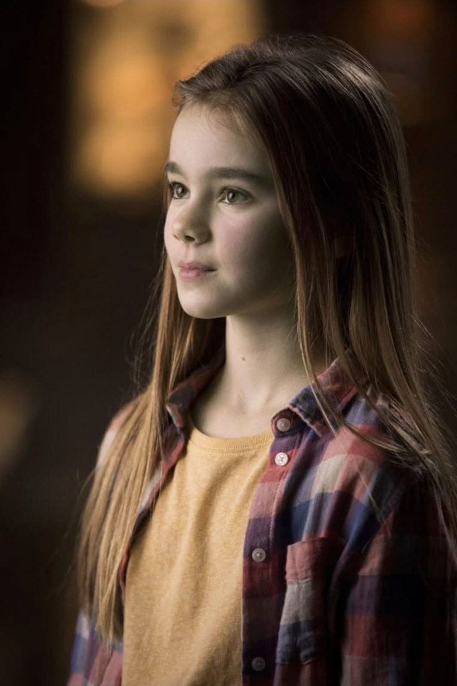
7 anosLara Clifford Weber Miller
- primogênita de Natasha e Joel
- inglesa, de Londres
- herdeira direta do trono
Quem é
Um furacão de energia. Esquentadinha, impulsiva, caótica e intensa: não consegue ficar parada e está sempre no centro da próxima aventura, missão ou confusão. É baixinha para a idade e a mais velha dos quatro — e carrega desde muito nova o peso de ser a herdeira direta. Questiona tudo, toma a frente, se envolve com tudo e lidera sem perceber que está liderando.
Gostos
Detesta vestido no dia a dia; só aceita em ocasião formal. Prefere camiseta, calça e moletom, sempre parecidos com os da mãe. É apaixonada por história — civilizações antigas, relíquias, o passado da própria família — e transforma bonecas e brinquedos em expedições a ruínas e templos imaginários. Pinta como a mãe e quer aprender bateria, piano, violino e guitarra, tudo ao mesmo tempo. Tem um golden retriever que não sai do seu lado.
Poderes
Herdou os dons de Natasha e ainda está descobrindo o tamanho deles: leitura de mentes, invocação de ilusões, controle mental e manipulação de energia física (feixes térmicos e orbes). Sem controle total ainda — mas a afinidade já aparece sozinha.
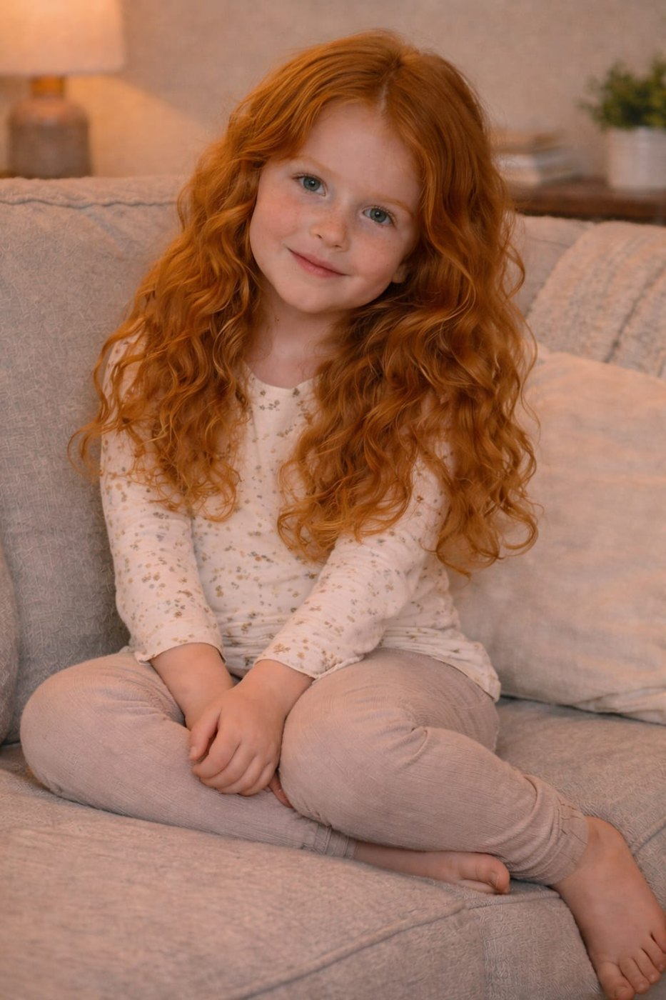
5 anosNathalia Clifford Weber Miller
- segunda filha de Natasha e Joel
- ruiva, sardenta
- quer ser médica
Quem é
O oposto da Lara. Calma, paciente, sensível e extremamente doce. Quer ser médica e salvar vidas, e leva isso a sério desde já. Equilibrada, carinhosa, observadora; inteligente como poucos, entende o que acontece em volta com uma maturidade que ninguém espera de alguém dessa idade.
Gostos
Gosta de casaquinho e vestidinho, mas escolhe o conforto — roupas simples, como as da mãe. Na brincadeira é sempre a médica da turma: usa bonecas de pano para exame, diagnóstico e cirurgia, e os irmãos vivem levando brinquedos “doentes” até ela. Adora bloco de montar e constrói as próprias clínicas. Lê, toca violino e passa horas com os animais da fazenda. Muito próxima de Natasha.
Poderes
A mente brilhante é o dom. Não tem nada sobrenatural: tem inteligência, empatia e uma capacidade de curar pelo lado emocional que faz dela uma força silenciosa da casa.
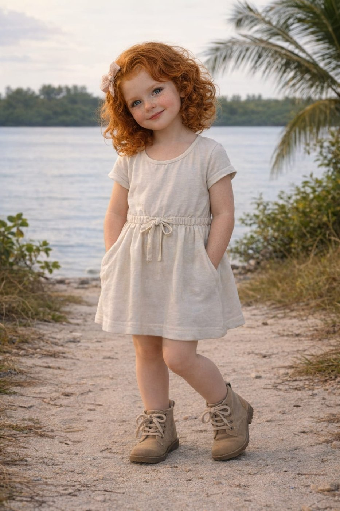
3 anos · gêmea de TheoRebeca Clifford Weber Miller
- ruiva de cabelo ondulado
- ligada à linhagem de Liora Weber
- a mais próxima de Banguela
Quem é
Sensível, carinhosa e tranquila. Carrega uma calma que não é dessa geração: vem de Liora Weber, uma das 21 Guardiãs do Mundo e origem da linhagem mágica da família. Rebeca não sabe disso, mas está ligada à fonte dos dons Weber — e a presença dela transmite conforto e uma força interior silenciosa.
Gostos
Ama vestido, como os da mãe. Brinca com bonecas e bichos de pelúcia e vive junto dos animais da fazenda. Tem uma ligação especial com Banguela, o Fúria da Noite da família, e passa horas ao lado dele. Muito próxima de Natasha.
Poderes
Não vieram só da mãe: vieram de Liora. Leitura de mentes, capacidade de acalmar pessoas com o toque, alívio de dor e uma percepção emocional profunda — sente o que os outros sentem. Não entende nada disso ainda, e não está sendo treinada: é pequena demais.
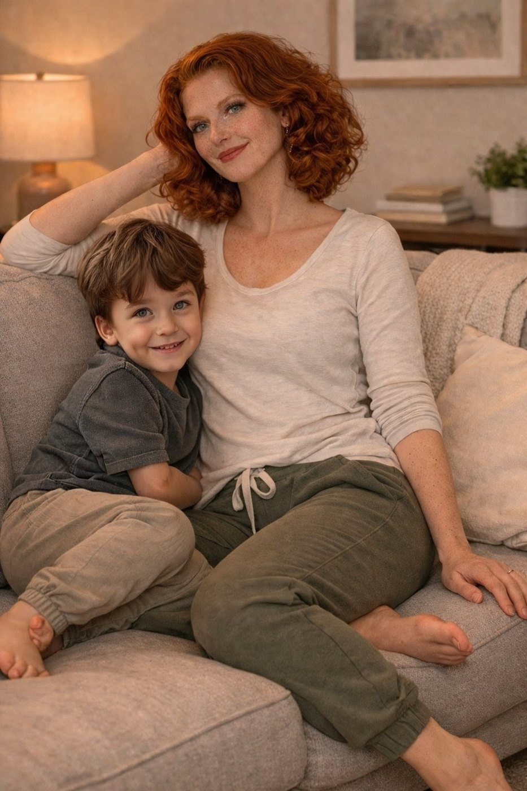
3 anos · gêmeo de RebecaTheo Clifford Weber Miller
- castanho, olhos verdes puxando pro castanho
- o mais próximo de Joel
- promete ser mais alto que o pai
Quem é
O mais protetor e centrado dos quatro — o mini-Joel, literalmente. Tem senso de estratégia e liderança natural: é o irmão que pensa antes de agir, observa antes de falar e cuida dos outros sem esforço nenhum. Silenciosamente determinado.
Gostos
Roupa simples, como a do pai. Detesta boneco; ama carrinho, esporte com bola e qualquer brinquedo com roda ou engrenagem. É apaixonado por carruagens e já diz que um dia vai comandar esse setor da Weber. Anda de bicicleta sempre que pode — de preferência na cestinha da bike da mãe.
Poderes
Nenhum dom sobrenatural. A força dele é a cabeça estratégica, o instinto de proteger e a lealdade. Um líder nato, e só isso já é bastante.
Os quatro dividem uma paixão só: Banguela, o Fúria da Noite que vive na fazenda da Mansão Miller Weber. Brincam com ele todo dia e o tratam como parte da família. Rebeca tem com ele um laço que os outros três não conseguem explicar.
Familiares 1 registro(s)


Chloe Clifford Weber
Estudante · Futura CEO da WeberIdentificação
Idade: 10 anos
Nacionalidade: Inglesa / Italiana
Estado civil: Solteira
Mãe: Elizabeth Clifford Weber
Pai: William Lucchesi Weber
Irmã: Natasha Clifford Weber
Habilidades
Manipulação de energia psíquica
Influência mental
Chloe nasceu na Inglaterra, sendo a irmã mais nova de Natasha Clifford Weber e a segunda filha da Rainha Elizabeth Clifford Weber. Desde pequena, Chloe sempre foi muito próxima de Natasha, vendo a irmã mais velha como uma figura de proteção e inspiração. Com apenas 10 anos, já demonstra uma inteligência e sensibilidade acima da média, além de possuir habilidades psíquicas semelhantes às de Natasha, porém ainda em desenvolvimento. Quando Natasha foi enviada para Paladis, Chloe insistiu em acompanhá-la, não apenas por sua conexão com a irmã, mas também por desejar entender o mundo ao lado de Natasha e Joel. Mesmo sendo uma criança, Chloe absorve tudo o que acontece ao redor, aprendendo sobre estratégia, política e os negócios da Weber, preparando-se, inconscientemente, para seu futuro papel. Com o retorno de Natasha à Inglaterra, Chloe continua sendo sua maior apoiadora. No futuro, quando Natasha finalmente assumir o trono, Chloe herdará o comando da Weber, tornando-se a futura CEO do império industrial da família. Por trás de sua personalidade doce e inocente, Chloe já carrega um futuro brilhante e promissor.
Lancaster Volkov
Sangue antigo e contratos mais antigos ainda. É a família que chegou mais perto de entender o que são as fendas — e a que menos explica como. A casa cresceu: o que era um casal com uma filha adotada agora é uma casa cheia de criança.
Núcleo 2 registros


Cassandra d'la Fountaine Lancaster Volkov
Detetive ConsultoraIdentificação
Idade: 311 ~ 31 anos em idade humana
Nacionalidade: Francesa
Estado civil: Casada
Mãe: Mediuna d'la Fountaine
Pai: Desconhecido
Irmãos: Trystan Maverine Lancaster, Alyssa Maverine Lancaster
Habilidades
Influência Mental
Absorção de Vitalidade
Aprimoramento Físico
Cassandra é um ser híbrido: consegue ser dois tipos de seres diferentes em um só, o que lhe permite transitar tranquilamente entre os humanos, sem que a notem, mesmo sendo a última sereia restante. Isso tudo graças — ou culpa, como ela gosta de dizer — a um humano que capturou sua mãe e a engravidou. Daí nasceu Cassandra, filha de uma sereia e ao mesmo tempo filha de um humano. Ao longo dos anos, as sereias foram caçadas, uma a uma, apontadas como maiores inimigas dos marinheiros, até não sobrar mais nenhuma — exceto Cassandra, a única sobrevivente. Viu todos os seus amigos e familiares serem pegos pelas redes dos humanos, mortos, torturados. Por isso, enquanto estiver viva, jura vingança por todos os seus companheiros falecidos. Há 8 anos anda disfarçada no meio deles, trabalhando como "detetive" dos casos da cidade. Seu nome é consideravelmente famoso pela quantidade de casos solucionados e pela eficiência de seu trabalho. Durante esse tempo, não criou relações com ninguém da cidade onde trabalha — está lá para ser profissional, não para ser amiga. Poderes: seu canto mortal encanta qualquer um que esteja perto o suficiente para ouvi-lo. Controla os mares e as marés a seu favor, cria ilusões e manipula vontades; suas unhas, tanto na forma humana quanto sereia, carregam um veneno mortal. Personalidade: fria, mas educada quando o trabalho exige. Indiferente à maioria das coisas, mas muito esperta por ter vivido tanto tempo assim. Ama o mar, mas gostaria que ele fosse igual ao que se lembra de quando era pequena. Fraquezas: sério problema de desidratação em forma humana; ouvido altamente sensível a barulhos altos; torna-se fraca durante noites de lua cheia.


Thorn Leocadio Mephisto Volkov d'la Fountaine
Lorde Lux · Inventor · BoxeadorIdentificação
Idade: 34 anos
Nacionalidade: Russo
Estado civil: Casado
Mãe: Desconhecida
Pai: Desconhecido
Irmãos: Nikolai Petrov, Yelena Petrov
Habilidades
Manipulação Espacial
Distorção da Realidade
Thorn é um bastardo, fruto de relacionamento não conjugal — algo visto como inadmissível na Rússia, sua terra natal. Pelas altas camadas da sociedade, era visto com desdém, privado ao longo da juventude de direitos e cargos que os demais jovens possuíam, apenas por não ser legítimo. Teve uma infância conturbada: seus pais o abandonaram quando ainda era um garotinho. Sua mãe foi exilada e morta por traição contra o Estado russo; seu pai o abandonou e constituiu nova família. Berenilde, sua tia por parte de pai, se responsabilizou por criá-lo como se fosse seu próprio filho. Após anos suportando a humilhação de ser um bastardo, Thorn ficou farto dos insultos da alta corte e, aos 30 anos, fugiu da Rússia com sua tia, instalando-se em Paladis e abrindo mão de todas as riquezas que sua família possuía em território russo. Desesperado para sustentar a si e à tia, apresentou-se para o emprego de secretário do rei e da rainha, em troca de abrigo no castelo. A rainha teve compaixão e o contratou — Thorn se mantém firme e leal à coroa desde então. Boatos dizem que é o homem em que a rainha mais confia, depois de seu marido, é claro.
Filhos 4 registros
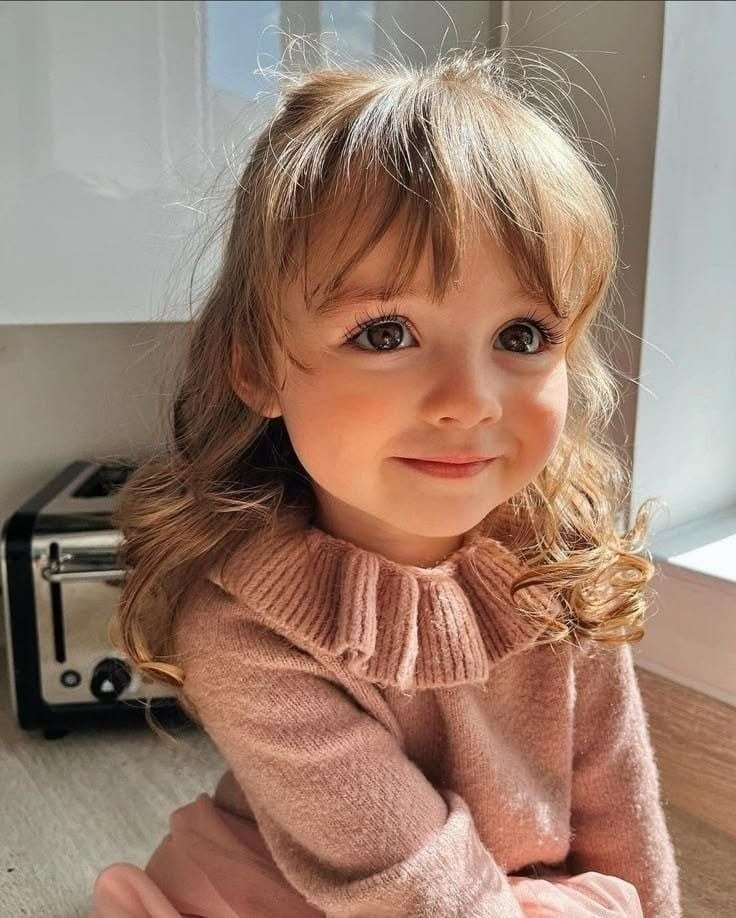
filha de Cassandra e ThornPietra d'la Fountaine Mephisto
- adotada por Cassandra
- criada por Cassandra e Thorn
Quem é
Foi encontrada abandonada e sozinha por Cassandra, que, ao vê-la tão indefesa, decidiu acolhê-la e criá-la como filha — especialmente por não poder ter filhos. Determinada a garantir um futuro seguro para a menina, Cassandra se dedicou a ser a melhor mãe que conseguia. Quando Thorn entrou na vida das duas, manteve no começo a postura reservada de sempre, mas acabou desenvolvendo um afeto genuíno por Pietra e assumindo aos poucos o papel de pai.
Poderes
Talha de teletransporte.
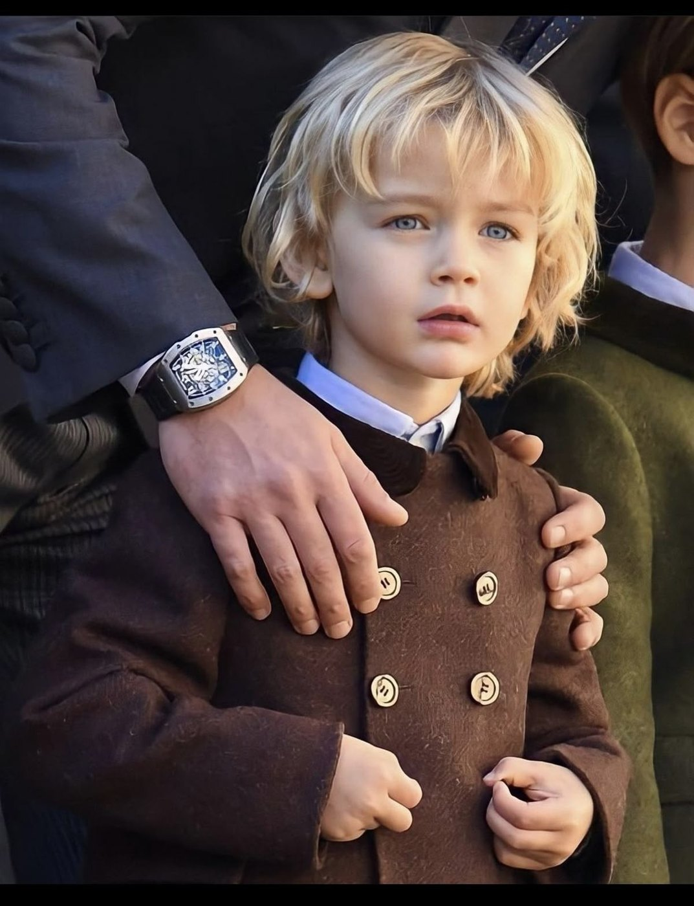
filho(a) de Cassandra e ThornVictor d'la Fountaine Mephisto
- registro ainda não aberto
Registro
Ainda não chegou material sobre esta criança. O lugar já está guardado aqui: assim que a história existir, entra neste espaço sem mexer em mais nada da página.
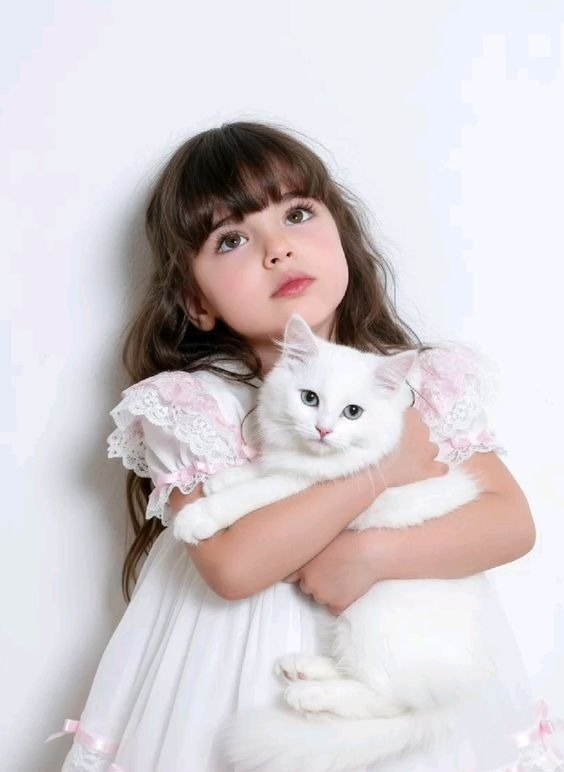
filho(a) de Cassandra e ThornVictorie d'la Fountaine Mephisto
- registro ainda não aberto
Registro
Ainda não chegou material sobre esta criança. O lugar já está guardado aqui: assim que a história existir, entra neste espaço sem mexer em mais nada da página.
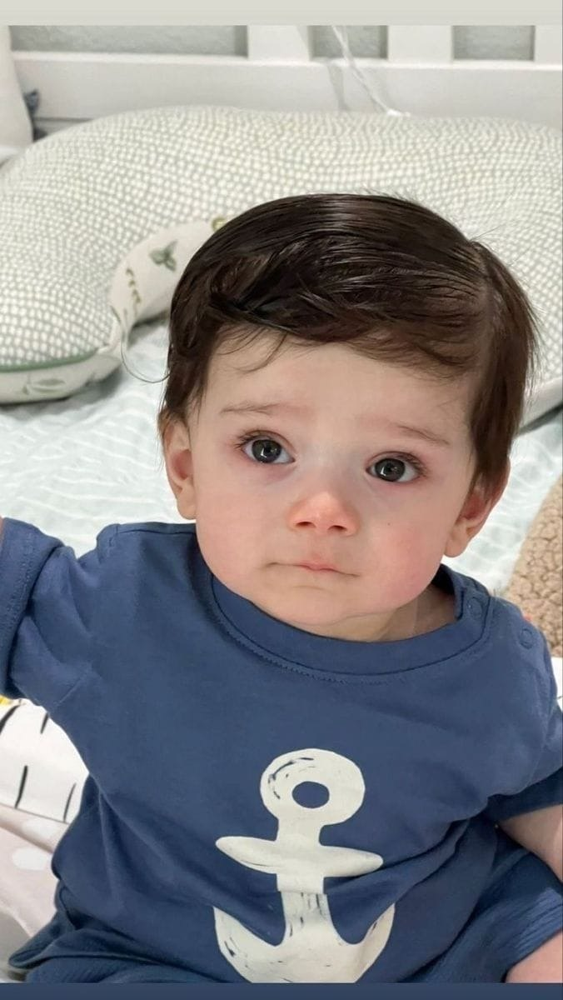
filho(a) de Cassandra e ThornAlister d'la Fountaine Mephisto
- registro ainda não aberto
Registro
Ainda não chegou material sobre esta criança. O lugar já está guardado aqui: assim que a história existir, entra neste espaço sem mexer em mais nada da página.
Familiares 1 registro(s)


Trystan Maverine Lancaster
Médico · EstudanteIdentificação
Idade: 33 anos
Nacionalidade: Egípcio
Estado civil: Solteiro
Mãe: Evangelina Maverine
Pai: Desconhecido
Irmãs: Cassandra d'la Fountaine Lancaster Volkov, Alyssa Maverine Lancaster
Habilidades
Não possui poderes
Trystan nasceu em uma família relativamente pobre e desestruturada. Seu pai, assim que soube da gravidez de sua mãe, a abandonou sem qualquer amparo, deixando-a e o filho recém-nascido à própria sorte. Ainda assim, a mãe de Trystan batalhou para lhe dar as melhores condições possíveis. As coisas começaram a mudar quando a mãe de Trystan conheceu Mediuna — a sereia rainha, que havia sido violentada pelo pai de Trystan e estava grávida na época. Ambas as mães criaram um respeito e empatia por suas situações, além de um repúdio tremendo pelo homem que as fez sofrer. Após alguns meses, Trystan, que na época tinha 6 aninhos, conheceu sua nova irmãzinha, Cassandra. Os dois sempre tiveram um vínculo saudável, apesar de serem de raças diferentes. Eram grandes amigos e inseparáveis. Quando Trystan se formou na escola, sua mãe simplesmente desaparecera de sua vida, sem deixar rastros. Abalado e sem rumo, decidiu se tornar um mercenário e deixar para trás a vida de dignidade que tinha. Em algum momento, Cassandra e Trystan se separaram por uma briga da qual ele não se recorda, e ficaram longe um do outro por exatamente 8 anos. Até que um dia ele escutou boatos de que havia uma detetive solucionando muitos casos na cidade em que morava, e foi aí que eles se encontraram novamente.
De La Croix
Mil e duzentos anos de casa, dois sobrenomes que já foram inimigos e duas crianças de seis anos correndo pelos corredores. É a família que mede o tempo em séculos e, por isso, a única que ainda acha que quatro semanas é prazo.
Núcleo 2 registros


Nigihayami Haku de La Croix Ravnos
Comandante Supremo do Clã de La CroixIdentificação
Idade: 1.298 anos
Nacionalidade: Francês
Raça: Vampiro Ancestral
Estado civil: Casado com Arlecchino Fontenelle Ravencour de La Croix
Mãe: Arleth de La Croix
Pai: Morvain Vorath Ravnos
Irmãos: Eleonor, Sylus e Elizabeth de La Croix
Filhos: Caelly e Ashriel
Habilidades
Manipulação Sombria
"O Eclipse" (dissolve-se completamente nas trevas)
Estrategista militar sem igual
Força e velocidade sobre-humanas
Filho da lendária Arleth de La Croix e de Morvain Vorath Ravnos, Haku cresceu cercado por expectativas impossíveis, aprendendo estratégia militar, diplomacia e combate enquanto outras crianças aprendiam a brincar. Ao longo de mais de um milênio viu amigos, aliados e mestres desaparecerem, e passou a acreditar que o papel de um líder era suportar a dor para que os outros não precisassem suportá-la — por muito tempo, viveu apenas pelo dever. Tudo mudou quando conheceu Arlecchino: primeiro sua pupila, depois uma das poucas pessoas capazes de enfrentá-lo intelectualmente e dividir o peso da liderança. Apaixonou-se lentamente, e isso o assustou — mas descobriu que amá-la o tornou mais forte, não mais vulnerável. O nascimento de Caelly e Ashriel transformou sua vida mais uma vez: pela primeira vez em mais de um milênio, Haku desejou não apenas sobreviver, mas viver. É extremamente reservado e um homem de poucas palavras e muitos gestos — quem não o conhece acredita que seja frio ou incapaz de sentir, mas ele sente tudo profundamente, apenas acredita que demonstrar emoções sem controle coloca outras pessoas em risco. A família sempre vem primeiro; lealdade vale mais que poder; a palavra dada é sagrada. Jamais atacaria alguém indefeso ou abandonaria um companheiro. Age quase sempre pela lógica — mas, quando sua família está em perigo, a lógica desaparece e ele se torna absolutamente implacável. Em combate, não desperdiça movimentos: cada golpe e cada sombra têm um propósito; os inimigos dizem que lutar contra ele é como enfrentar a própria noite. Seu amor é silencioso: nunca fará grandes declarações diante de uma multidão, mas atravessaria o próprio inferno para salvar quem ama sem pensar duas vezes. Demonstra isso através da presença — prepara chá para Arlecchino quando a percebe cansada, cobre os filhos com um cobertor quando adormecem no sofá, e ouve Ash explicar seus desenhos de monstros como se fossem um tratado científico. Seu maior medo não é morrer — é sobreviver à própria família, ou falhar como pai. "A força de um homem não se mede pelas vidas que ele tira, mas pelas que ele dedica a proteger."


Arlecchino Fontenelle Ravencour de La Croix
Senhora da Casa de La Croix · Estrategista e DiplomataIdentificação
Idade: 785 anos
Nacionalidade: Francesa / Espanhola
Raça: Vampira
Estado civil: Casada com Nigihayami Haku de La Croix Ravnos
Mãe: Brigitte Marigny Fontenelle
Pai: Magnus Châteaubriand Ravencour Valmont
Irmão: Noérian Châteaubriand Fontenelle
Filhos: Caelly e Ashriel
Habilidades
Manipulação Sombria e Mental
Pirocinese
Ascensão do Fogo Demoníaco (asas flamejantes)
Combate com foice de nível mestre
Nascida em uma antiga linhagem nobre marcada por intrigas, guerras e responsabilidades que jamais permitiram uma infância comum, Arlecchino aprendeu desde jovem que sentimentos poderiam comprometer decisões importantes — etiqueta, estratégia militar, diplomacia e combate vieram quase ao mesmo tempo. Ao longo dos séculos viu impérios nascerem e desaparecerem, e cada perda a tornou menos impulsiva e mais calculista, mas nunca endureceu completamente seu coração: desenvolveu, em vez disso, um senso de responsabilidade quase absoluto. Após casar-se com Haku, encontrou alguém capaz de compreender o peso que ambos carregavam, e o nascimento de Caelly e Ashriel revelou um lado maternal que poucos imaginariam existir nela. À primeira vista parece fria; na realidade, é extremamente reservada. Não demonstra carinho através de palavras — demonstra amor protegendo, organizando, antecipando problemas antes que existam. É paciente e quase impossível vê-la perder a compostura: quanto mais calma parece, maior costuma ser o perigo. Jamais abandonaria sua família, jamais colocaria inocentes em risco por conveniência e jamais quebraria sua palavra — para ela, liderança significa responsabilidade, nunca privilégio. Age pela lógica, quase nunca por impulso, e confia em poucas pessoas: perdoa erros honestos, mas não perdoa traição. Em combate, luta como uma bailarina — cada golpe é calculado, nenhum movimento é desperdiçado — e, quando ativa a Ascensão do Fogo Demoníaco, torna-se devastadora. Fala pouco, nunca grita e desmonta argumentos calmamente; o silêncio dela costuma intimidar mais do que qualquer explosão. Dentro de casa, porém, é surpreendentemente doce: aceita brincar de chá com Caelly, escuta suas perguntas filosóficas e observa Ash desenhando monstros com interesse genuíno, sempre conversando com os dois como indivíduos inteligentes, nunca os infantilizando. Seu maior medo não é morrer — é sobreviver enquanto sua família desaparece. "O verdadeiro poder não está em destruir. Está em decidir, todos os dias, o que merece ser protegido."
Filhos 2 registros
Caelly Ravencour de La Croix
- filha de Haku e Arlecchino
- olhos vermelhos
- sem retrato registrado
Quem é
Elegante mesmo tão pequena: gosta de vestido clássico, de preferência claro, com babado e laço. Calma, educada e absurdamente observadora, com um olhar sereno — às vezes sério demais para uma criança. Adora chá e bonecas antigas, e faz perguntas que travam a mesa: “Papai, se as sombras sentem dor, por que elas não gritam?”
Poderes (em formação)
Manipula sombras suaves, que usa para criar bichinhos imaginários e esconder os próprios brinquedos. Ouve sussurros de objetos antigos, mas ainda não entende quase nada do que eles dizem.
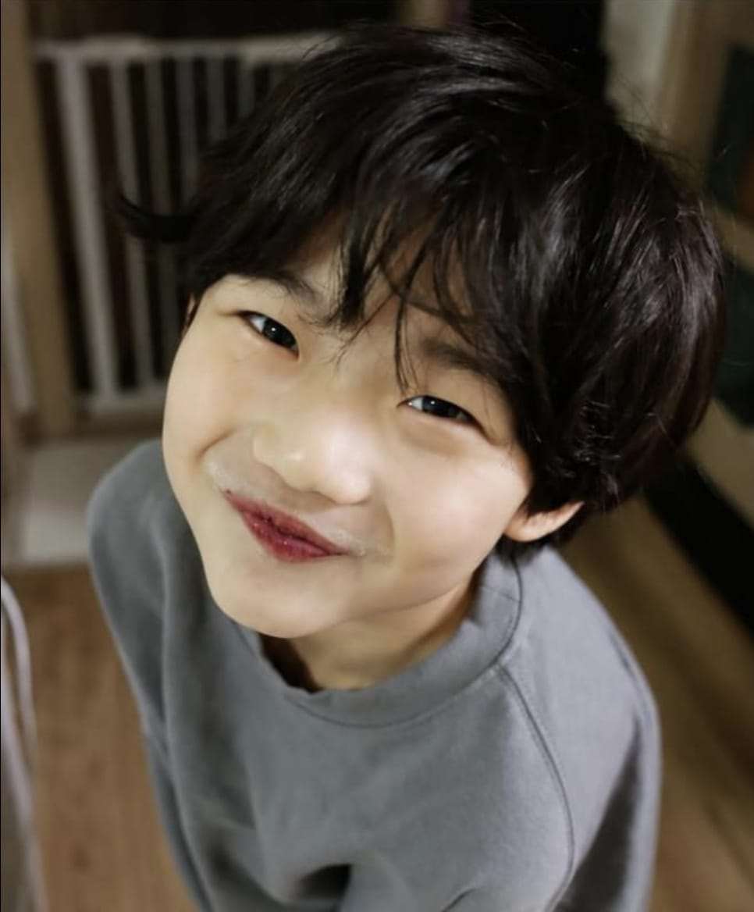
6 anos · irmão de CaellyAshriel Ravencour de La Croix
- filho de Haku e Arlecchino
- olhos vermelhos que brilham quando ele se anima
Quem é
Mais impulsivo que a irmã e muito mais protetor. Vive tentando impressionar o pai, imitando postura de guerreiro. Usa roupa formal e carrega um livrinho de desenho — mesmo que a capa seja de um grimório antigo. Esconde doce, pergunta sobre monstro e passa a noite jogando sombra em forma de dragão na parede.
Poderes (em formação)
Vira sombra por alguns segundos quando está com medo ou empolgado demais. Constrói pequenos escudos mentais quando fica bravo ou envergonhado — sem querer, e sem saber desfazer.
Arlecchino saiu da última viagem ao Universo 000 sem o anel de viagem multiversal e gravemente ferida. Está viva por causa do tratamento experimental que usou parte dos poderes de Natasha — e ninguém sabe dizer por quanto tempo isso se sustenta.